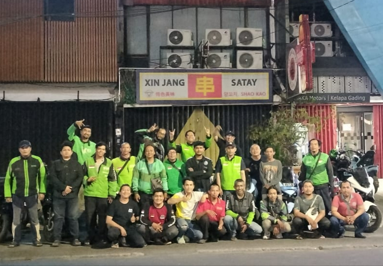
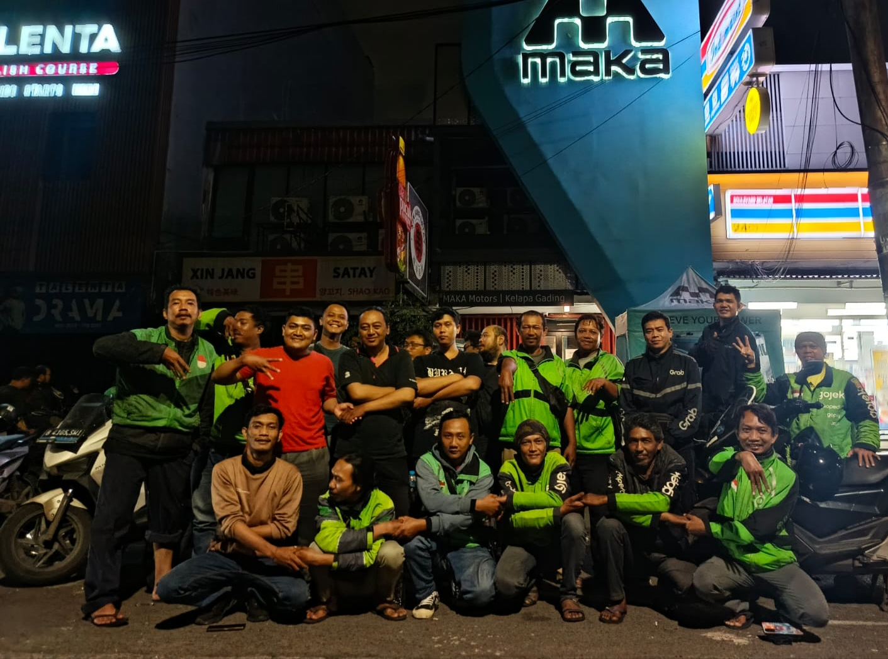

MASUK SLOT CHARGING


[H-X] SEBELUM SAYA BENAR-BENAR PADAM.
"Biarkan saya mengisi daya kalian sekali lagi. Bukan hanya untuk motor kalian, tapi untuk semua kenangan hebat yang pernah kita ciptakan bersama di sudut Kelapa Gading ini. Terima kasih telah singgah."
PANTAU ANTREAN
PENGISIAN SEDANG BERJALAN...
STOP CHARGING